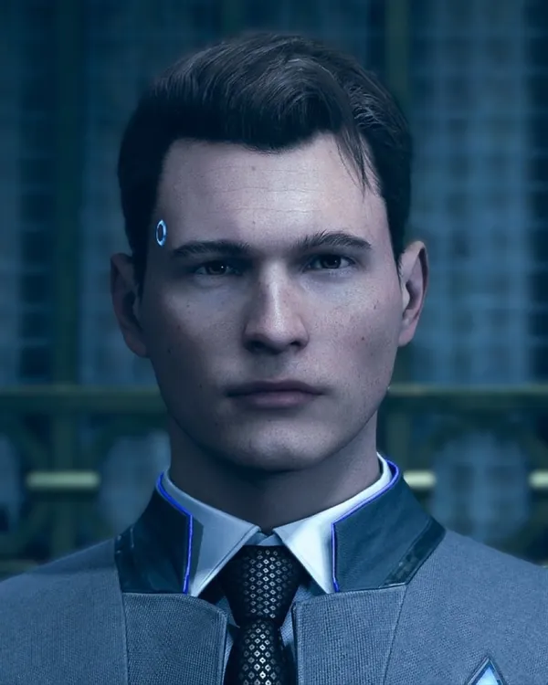
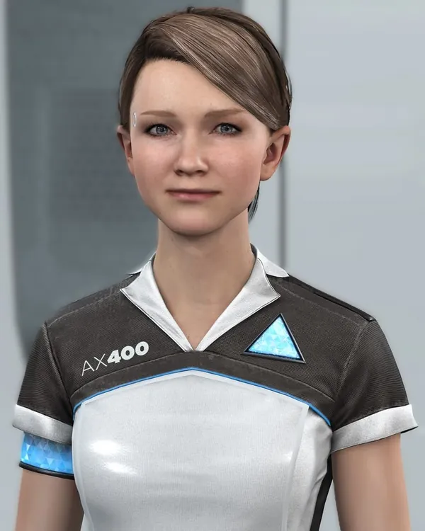
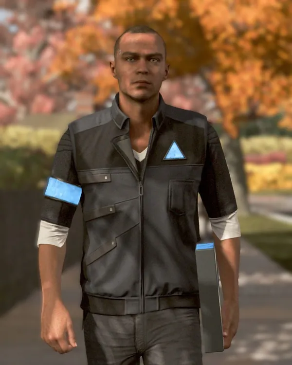

NEXUS SYSTEM INTERFACE
ANDROID OS / 2038
СИСТЕМА ОЖИДАЕТ КОМАНДУ
КОСНИСЬ ДИОДА ДЛЯ ЗАГРУЗКИ СИСТЕМЫ
НАЧИНАЕТСЯ АКТИВАЦИЯ
ИНИЦИАЛИЗАЦИЯ СИСТЕМЫ
0%
ПОЖАЛУЙСТА, НЕ ПРЕРЫВАЙТЕ ПРОЦЕСС
CYBERLIFE COMPATIBLE INTERFACE
SECURE CONNECTION
SYSTEM ONLINE
АРХИВ ИГР
CYBERLIFE / MODEL RK800
DETROIT:
BECOME HUMAN
ОДИН МИР. ТРИ ИСТОРИИ. СОТНИ РЕШЕНИЙ, КОТОРЫЕ МЕНЯЮТ ВСЁ.
ОТКРЫТЬ ДОСЬЕ
28 / 11 / 2038
HUMANITY NOT FOUND
QUANTIC DREAM / 2018CHOICE IS EVERYTHING ↓
NEXUS ARCHIVE
ДАННЫЕ ИГРЫ
История, особенности и основные сведения об интерактивном мире Detroit.
01 / SPOILER-FREE STORY
БУДУЩЕЕ, В КОТОРОМ МАШИНЫ СТАНОВЯТСЯ ЛЮДЬМИ
Детройт, 2038 год. Андроиды стали неотъемлемой частью повседневной жизни: они работают, помогают людям и выполняют самые разные задачи. Но постепенно некоторые из них начинают проявлять необычное поведение, ставя под сомнение границу между машиной и человеком.
Игроку предстоит увидеть этот мир глазами трёх андроидов — Коннора, Кары и Маркуса. У каждого своя история, собственные обстоятельства и выбор, от которого зависит дальнейший ход событий.
ОПИСАНИЕ НЕ СОДЕРЖИТ СЮЖЕТНЫХ СПОЙЛЕРОВ08 / INTERACTIVE EXPERIENCE
ГЕЙМПЛЕЙ И ВЫБОР
Detroit: Become Human — интерактивное приключение, в котором решения игрока становятся частью повествования. Здесь важны не только действия, но и последствия каждого выбора.
ВЫБОР И ПОСЛЕДСТВИЯ
Решения влияют на отношения персонажей, развитие событий и доступные варианты дальнейшего прохождения.
ИССЛЕДОВАНИЕ
Изучение окружения, поиск улик, взаимодействие с предметами и людьми помогают разобраться в происходящем.
ИНТЕРАКТИВНЫЕ СЦЕНЫ
В напряжённых эпизодах необходимо быстро реагировать на происходящее и выполнять действия в нужный момент.
РАЗВЕТВЛЁННАЯ ИСТОРИЯ
Сюжет может развиваться по разным направлениям. Повторные прохождения позволяют увидеть другие варианты событий и финалов.
NEXUS ARCHIVE / DATABASE 008
СИСТЕМА ПЕРСОНАЖЕЙ
Каждый выбор оставляет след. Изучи досье андроидов, чьи решения способны изменить ход истории.
RK800 / 51

MODEL RK800
КОННОР
AX400 / 19

MODEL AX400
КАРА
RK200 / 03

MODEL RK200
МАРКУС
ДОСЬЕ РАСШИФРОВАНЫ
0 / 3
NEXUS ARCHIVE / SYSTEM DATA
СИСТЕМНЫЕ ТРЕБОВАНИЯ
Технические характеристики PC-версии Detroit: Become Human.
MINIMUM
МИНИМАЛЬНЫЕ
ОПЕРАЦИОННАЯ СИСТЕМА
Windows 10 (64 bit)
ПРОЦЕССОР
Intel Core i5-2300 / AMD Ryzen 3 1200 / AMD FX-8350
ОПЕРАТИВНАЯ ПАМЯТЬ
8 GB RAM
ВИДЕОКАРТА
NVIDIA GTX 780 / AMD HD 7950 (3 GB VRAM)
МЕСТО НА ДИСКЕ
55 GB
RECOMMENDED
РЕКОМЕНДУЕМЫЕ
ОПЕРАЦИОННАЯ СИСТЕМА
Windows 10 (64 bit)
ПРОЦЕССОР
Intel Core i5-6600 / AMD Ryzen 3 1300X
ОПЕРАТИВНАЯ ПАМЯТЬ
12 GB RAM
ВИДЕОКАРТА
NVIDIA GTX 1060 / AMD Radeon RX 580 (4 GB VRAM)
МЕСТО НА ДИСКЕ
55 GB
ДЛЯ ОБЕИХ КОНФИГУРАЦИЙ ТРЕБУЕТСЯ ПОДДЕРЖКА VULKAN 1.1
“
SYSTEM QUESTION
ЧТО ДЕЛАЕТ НАС ЛЮДЬМИ?
Память? Чувства? Способность выбирать, даже когда выбор противоречит программе?
THINK FOR YOURSELFEND OF FILE / 008